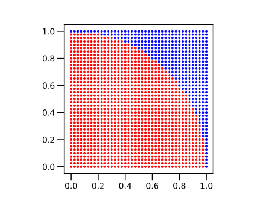
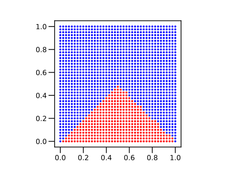
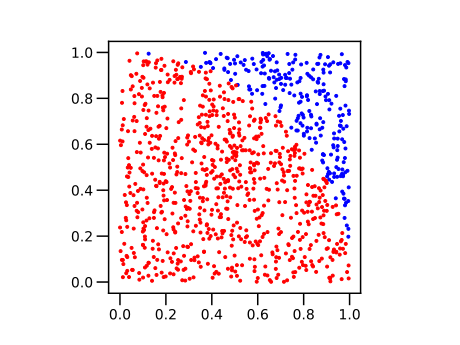
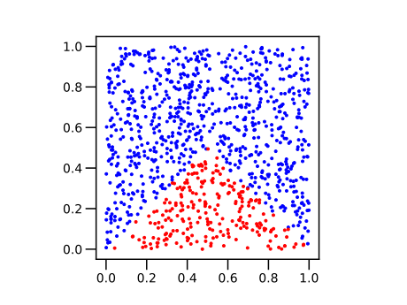
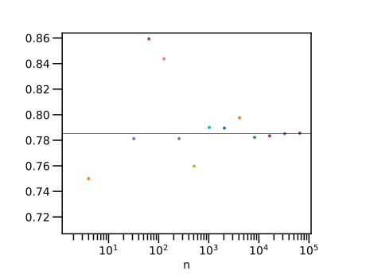
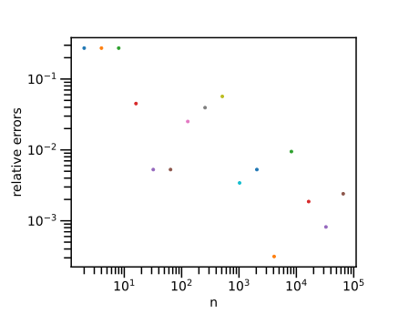
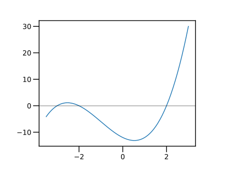
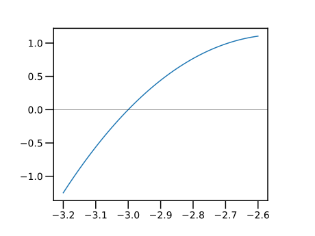
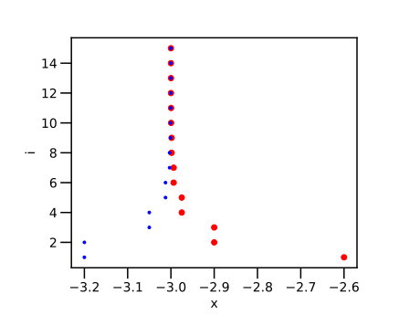
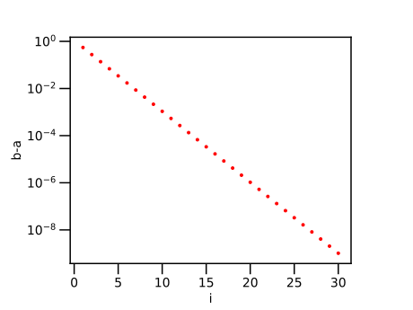

第5回：■ 条件式・■ 条件分岐
■ 数の大小比較
値が等しい・異なる
演算子 == は，a == b のように用いて，値が等しいか否か判定する． 演算子 != は，値が異なるか否か判定する． 成立すれば（真ならば） true が， 成立しなければ（偽ならば） false が結果となる．
julia> 1 == 1truejulia> 1 == 2falsejulia> 1 != 1falsejulia> 1 != 2true
より大きい
演算子 > は，a > b のように用いて，a の値が b の値よりも大きいか否か． 演算子 >= は，a >= b のように用いて，a の値が b の値以上であるか否か判定する．
julia> 2 > 1truejulia> 2 >= 1truejulia> 2 >= 2true
より小さい
演算子 < は，a < b のように用いて，a の値が b の値よりも小さいか否か． 演算子 <= は，a <= b のように用いて，a の値が b の値以下であるか否か判定する．
julia> 2 < 1falsejulia> 2 <= 1falsejulia> 2 <= 2true
■ 論理型
比較演算子の結果は true または false のどちらかである． この二つの値からなるデータの種類を論理型（logical type）という．
■ if文
Conditional Evaluation (section)
if文は，直後に論理式をとる． 論理式の値が true なら，if文の次の文から，end , else , elseif が出現するまでの文を実行する．
条件が成り立つときだけに実行される部分を「 if ブロック（block）」という．
ブロックは，字下げ（indent） で表記される．が，字下げは見やすさのためだけである．
julia> x = 11julia> y = 22julia> if x < y println("x は y より小さい") endx は y より小さい
if ブロックの後ろに，else 文が続く場合がある． 論理式の値が false なら，else 文の次の文から end が出現するまでの文（「 else ブロック」）を実行する．
julia> x = 11julia> y = 22julia> if x < y println("x は y より小さい") else println("x は y より小さくない") endx は y より小さい
else 文の前に，elseif 文が続く場合もある． 最初の if 文の論理式が false なら，elseif 文の論理式を計算し， それが true なら，elseif 文の次の文から，elseif または end が出現するまでの文（「 elseif ブロック」）を実行する．
julia> x = 11julia> y = 22julia> if x < y println("x は y より小さい") elseif x > y println("x は y より大きい") else println("x は y と等しい") endx は y より小さい
■ if式
if式は，論理式が成立したブロックの最後の値を，式の値とする．
julia> x = 4040julia> m = if x >= 100 "x は 100 以上である" elseif x >= 50 "x は 50 以上である" elseif x >= 20 "x は 20 以上である" else "x は 20 よりも小さい" end"x は 20 以上である"julia> @show mm = "x は 20 以上である" "x は 20 以上である"
if式を用いて ▼ 絶対値関数 を，以下のように書くこともできる．
julia> myabs1(x) = if x >= 0 x else -x endmyabs1 (generic function with 1 method)julia> @show myabs1(-1)myabs1(-1) = 1 1
■ 3項演算子
Conditional evaluation "ternary operator"
a ? b : c
条件 a が真 true なら b を， 偽 false なら c を値とする「マクロ」である．
julia> m = 2 > 1 ? "yes" : "no""yes"julia> @show mm = "yes" "yes"
if式を用いて ▼ 絶対値関数 を，以下のように書くこともできる．
julia> myabs2(x) = x >= 0 ? x : -xmyabs2 (generic function with 1 method)julia> @show myabs2(-1)myabs2(-1) = 1 1
■ 論理演算
論理否定
論理否定 ! a は，a の論理値を反転する．
julia> !truefalsejulia> !falsetrue
論理積
論理積 a && b は，a と b との両方が true のときだけ true となる．言い換えると，a と b との，少なくとも一つが false なら，false となる．
julia> true && truetruejulia> true && falsefalsejulia> false && truefalsejulia> false && falsefalse
■ 数の大小比較の連続した記述
数の比較演算子は，連続して記述できる．
julia> 1 < 2 < 3truejulia> 1 < 2 && 2 < 3true
論理和
論理和 a || b は，a と b との少なくとも一つが true のとき true となる．言い換えると，a と b のどちらも false のときに false となる．
julia> true || truetruejulia> true || falsetruejulia> false || truetruejulia> false || falsefalse
■ 短絡評価
Short-Circuit Evaluation (section)
論理積 a && bと論理和 a || bの評価において， 第1項 a で結果が決まるなら，第2項 b は評価しない． これを短絡評価という．具体的には．
- 論理積
a && bにおいて，aが 偽falseなら，bを評価しない．
( a が 偽 false なら，b の値によらず，論理積 a && b は偽 false であるから．)
- 論理和
a || bにおいて，aが 真trueなら，bを評価しない．
( a が 真 true なら，b の値によらず，論理和 a || b は 真 true であるから．)
●▼ 論理型〜整数型の一つとして
Bool 型は，2進数1桁の符号なし整数 UInt1 である． 整数と論理型の値との演算では false は整数 0 , true は整数 1 とみなされる．
julia> 2 + true3julia> 2 + false2
逆に，整数 0 と 1 を論理型に変換するには関数 Bool を用いる．
julia> Bool(0)falsejulia> Bool(1)truejulia> Bool.([0, 1]) # 整数のベクトル [0,1] を論理型のベクトルに変換する2-element BitVector: 0 1
●▼ 論理式と真理表
「論理式（logical expression）」とは， 論理型の変数，または，それらに論理演算を適用した式をいう．
「真理表（truth table）」とは， 論理式に出現する変数（論理変数）のすべての組合せに対して，論理式の値を示した表である．
上の 論理和, 論理積 では，論旨式に変数の４通りの組み合わせに対する演算結果を列挙した．
上で導入した 論理和 a || b および 論理積 a && b に対して， 論理変数 a と b のすべての組合せに対する計算結果を計算してみよう．
julia> for a in [false, true] for b in Bool.([0, 1]) @show a, b, a || b, a && b end end(a, b, a || b, a && b) = (false, false, false, false) (a, b, a || b, a && b) = (false, true, true, false) (a, b, a || b, a && b) = (true, false, true, false) (a, b, a || b, a && b) = (true, true, true, true)
今度は，論理式 z=(!a && b) || (a && !b) の値を計算してみよう．
ここで，論理否定 ! は，論理和 && や論理積 || よりも 優先順位が高い演算であるので，!a || b は (!a) && b と解釈される． !(a || b) とは解釈されない．
julia> for a in Bool.([0, 1]), b in Bool.([0, 1]) x = !a && b y = a && !b z = x || y @show a, b, x, y, z end(a, b, x, y, z) = (false, false, false, false, false) (a, b, x, y, z) = (false, true, true, false, true) (a, b, x, y, z) = (true, false, false, true, true) (a, b, x, y, z) = (true, true, false, false, false)
論理式 z は，
aとbの値が異なるときにtrueaとbの値が等しいときにfalse
の値をとる． この論理式は，排他的（はいたてき）論理和（exclusive or, 略して exor あるいは XOR）と呼ばれる．
▼ 総当たりによる不定方程式の解法
方程式の数よりも，未知数の数が少ない方程式を不定方程式という． 未知数の性質が決まっていれば，未知数の候補を，方程式に代入して， 成り立つ未知数の組合せを求めることができる（総当たり攻撃，brute-force attack）．
問題 「負ではない三つの整数 $x, y, z$ が，次の二つの等式を同時に満たすという．
\[x + y + z = 24\]
\[x+2y+4z = 51\]
三つの数 $x, y, z$ の組合せをすべて求めよ．」
ここで， $x, y, z$ は，$0$ から $24$ までの整数である． $x, y, z$ のすべての組み合わせに対して，二つの等式が成り立つ条件を，if文に渡す．
julia> for z = 0:24 for y = 0:24 for x = 0:24 if x + y + z == 24 && x + 2 * y + 4 * z == 51 @show x, y, z end end end end(x, y, z) = (1, 21, 2) (x, y, z) = (3, 18, 3) (x, y, z) = (5, 15, 4) (x, y, z) = (7, 12, 5) (x, y, z) = (9, 9, 6) (x, y, z) = (11, 6, 7) (x, y, z) = (13, 3, 8) (x, y, z) = (15, 0, 9)
上の for 文の繰り返しは，３重の入れ子になっている．これは，一つの for 文にまとめられる．
julia> for z = 0:24, y = 0:24, x = 0:24 if x + y + z == 24 && x + 2 * y + 4 * z == 51 @show x, y, z end end(x, y, z) = (1, 21, 2) (x, y, z) = (3, 18, 3) (x, y, z) = (5, 15, 4) (x, y, z) = (7, 12, 5) (x, y, z) = (9, 9, 6) (x, y, z) = (11, 6, 7) (x, y, z) = (13, 3, 8) (x, y, z) = (15, 0, 9)
▲ 練習：総当たりによる不定方程式の解法
以下の式を満たす整数 $𝑎，𝑏$ をすべて求めよ（京都大学・数学 2005年）
- (1) $𝑎^{3} − 𝑏^{3} = 65$,
- (2) $𝑎^{3} − 𝑏^{3} = 217$
▼ 格子点による平面領域の塗り分け
平面座標 の第一象限 $0 \le x \le 1, 0 \le y \le 1$ の範囲に， 格子点を配置しよう．
そのうち，$x^{2}+y^{2} \lt 1$ の範囲にある点を赤で， それ以外を青で色分けして示そう．
二重の繰り返し（二重ループ，double loop）を用いた．
刻み幅は各軸 $0.025$ に選んだので， 格子点の総数は ${40}\times{40} = 1600$ 個である．
赤色の範囲は，4分円となる．
using PyPlot
plt.axes().set_aspect("equal")
for y = 0:0.025:1
for x = 0:0.025:1
c = x * x + y * y < 1 ? "r" : "b"
plot(x, y, ".", color = c)
end
end
今度は，二つの不等式 $y < x$ と $y < 1-x$ の両方に囲まれる領域を， 赤で示そう．
二重ループを一つの for 文にまとめた． for 文の右側に書かれたループ変数が内側のループに相当する．
using PyPlot
plt.axes().set_aspect("equal")
for y = 0:0.025:1, x = 0:0.025:1
if y < x && y < 1 - x
c = "r"
else
c = "b"
end
plot(x, y, ".", color = c)
end
▲ 練習
格子点の刻み幅を大きく，または，小さくして， 色分けの様子を観察してみよ．
関数 plot の fmt パラメータを . から o （circle）に変えてみよ． さらに，markersize パラメータを加えて，マーカーの大きさを調整できる．
plot(x,y,"o", markersize=3)刻み幅を小さくすると，格子点の数は急激に増える（例えば，$x,y$ 軸方向の刻みの数を2倍にすると，格子点の数は 4倍になる）ので，刻み幅を急激に小さくすべきではない．計算量が増えた場合，数分以内に計算が終わらない可能性もあるが，このような状況を経験するのも重要である．
▲ 練習
以下の領域を表す条件を，式で表せ．その領域を，格子点を用いて塗り分けてみよ．
- 点 $(0,0)$ と点 $(1,0)$ を一辺とし，第一象限に描かれた正三角形
- 中心 $\left(\dfrac{1}{2},\dfrac{1}{2}\right)$ , 半径 $\dfrac{1}{2}$ の円
■ 擬似乱数
計算機で発生する乱数を，「擬似乱数（pseudorandom numbers）」という．
本来の意味の「乱数」は，計算する方法がないはずである． にもかかわらず，ある手順で乱数を発生しているので「擬似乱数」という．
関数 rand() は，$0$ から $1$ 未満の擬似乱数を発生する．
julia> rand()0.9717189438231584julia> rand()0.3258649026507212julia> rand()0.013433823539256706
関数 Random.seed!(m) は，擬似乱数の種をリセットする． パッケージ Random を using してから用いる． 種 m には，$0$ から $2^{32}-1$ までの整数を指定する． 同じ種を指定すると，同じ系列で擬似乱数を発生する．
julia> using Randomjulia> Random.seed!(1234)Random.TaskLocalRNG()julia> rand()0.32597672886359486julia> rand()0.5490511363155669julia> rand()0.21858665481883066
▼ 乱数による平面領域の塗り分け
関数 rand() を2回用いて，座標点 (x,y) を発生しよう． 点の数を増やすと，これらの点は，平面の第一象限 $0 \le x \lt 1, 0 \le y \lt 0$ の範囲を埋め尽くすはずである．
そのうち，$x^2+y^2 \lt 1$ の範囲にある点を赤で， それ以外を青で色分けして示そう．
点の個数は $2^{10} = 1024$ である． 格子点で図示した場合（ ▼ 格子点による平面領域の塗り分け ）に比べて 点の数は少ないが，特徴を捉えている．
using PyPlot
plt.axes().set_aspect("equal")
n = 2^10
for i = 1:n
x = rand()
y = rand()
c = x * x + y * y < 1 ? "r" : "b"
plot(x, y, ".", color = c)
end
今度は， 二つの不等式 $y < x$ と $y < 1-x$ の両方に囲まれる領域のみ，赤で示そう．
using PyPlot
plt.axes().set_aspect("equal")
n = 2^10
for i = 1:n
x = rand()
y = rand()
if y < x && y < 1 - x
c = "r"
else
c = "b"
end
plot(x, y, ".", color = c)
end
▼ モンテカルロ法による平面図形の面積の推定
以上の例で，ランダムに落とした点の総数のうち， 図形の中に入った数を数えよう． 両者の割合から，図形の面積を推定できる． これを，「モンテカルロ（Monte Carlo）法による面積の算出法」という．
モンテカルロ（Monte Carlo）は，モナコ公国（Monaco）の地名の一つであり，公営カジノで有名である．モンテカルロ法（Monte Carlo Method）は，擬似乱数を用いて，数値計算やシミュレーションを行う手法の総称である（面積を推定する手法以外の「モンテカルロ法」もある）．
まず，4分円の面積を推定しよう．
n = 2^10
s = 0
for i = 1:n
global s
x = rand()
y = rand()
if x * x + y * y < 1
s += 1
end
end
a_estimated = s / n
a_exact = pi / 4
e_rel = (a_estimated - a_exact) / a_exact
@show a_estimated, a_exact, e_rel(0.77734375, 0.7853981633974483, -0.010255197647275843)測定値について，
- 絶対誤差（absolute error）とは，推定値と真値（exact value, 正しい値）との差（の絶対値）である．
- 相対誤差（relative error）とは，絶対誤差を真値で除した値（の絶対値）である．
面積の推定値（experimental value）は a_estimated = s/n である． 4分円の面積の真値 a_exact は $\dfrac{\pi}{4}$ である． （絶対値をとらない）相対誤差は e_rel=(a_estimated - a_exact)/a_exact と計算できる．
点数 $1024$ 個で，相対誤差 $2\%$ 程度の，面積推定値が得られた．
今度は，面積の推定値 a_estimated を，点の総数 n に対して描く．
using PyPlot
for m = 1:16
local n = 2^m
local s = 0
for i = 1:n
x = rand()
y = rand()
if x * x + y * y < 1
s += 1
end
end
local a_estimated = s / n
plot(n, a_estimated, ".")
@show n, a_estimated
end
a_exact = pi / 4
ylim(0.9 * a_exact, 1.1 * a_exact)
xlabel("n")
xscale("log")
axhline(a_exact, color = "k", lw = 0.5)(n, a_estimated) = (2, 1.0)
(n, a_estimated) = (4, 0.75)
(n, a_estimated) = (8, 0.625)
(n, a_estimated) = (16, 0.625)
(n, a_estimated) = (32, 0.78125)
(n, a_estimated) = (64, 0.859375)
(n, a_estimated) = (128, 0.84375)
(n, a_estimated) = (256, 0.78125)
(n, a_estimated) = (512, 0.759765625)
(n, a_estimated) = (1024, 0.7900390625)
(n, a_estimated) = (2048, 0.78955078125)
(n, a_estimated) = (4096, 0.797607421875)
(n, a_estimated) = (8192, 0.7822265625)
(n, a_estimated) = (16384, 0.783447265625)
(n, a_estimated) = (32768, 0.785186767578125)
(n, a_estimated) = (65536, 0.785614013671875)
今度は，面積の相対誤差（の絶対値） e_rel を，点の総数 n に対して描いてみる．
using PyPlot
for m = 1:16
local n = 2^m
local s = 0
for i = 1:n
x = rand()
y = rand()
if x * x + y * y < 1
s += 1
end
end
local a_estimated = s / n
local a_exact = pi / 4
local e_rel = abs((a_estimated - a_exact) / a_exact)
plot(n, e_rel, ".")
end
xlabel("n")
ylabel("relative errors")
xscale("log")
yscale("log")
▲ 練習
モンテカルロ法を用いて，以下の領域の面積を推定せよ（これらの領域の，格子点を用いた塗り分けは，以前の例題・練習として行った）．
余裕があれば，点数に対する相対誤差の変化も描いてみよ．
- 二つの不等式 $y < x$ と $y < 1-x$ の両方に囲まれる領域
- 点 $(0,0)$ と点 $(1,0)$ を一辺とし，第一象限に描かれた正三角形
- 中心 $\left(\dfrac{1}{2},\dfrac{1}{2}\right)$ , 半径 $\dfrac{1}{2}$ の円
●▼ モンテカルロ法による平面図形の面積の推定：落とす点の範囲を変える
上のプログラムで，x=rand() の行を x=rand()*2 に変えると，$0 \le x \lt 2, 0 \le y \lt 1$ の範囲に点を落とすことになる．この場合についても，面積の推定値を求めてみよ．点を落とす範囲が $0 \le x \lt 1, 0 \le y \lt 1$ と何が違うのだろうか？
■ 関数の定義（代入文形式）
関数は，いくつかの値を受け取って，何らかの操作をして返す，まとまった処理である．
1行によるユーザ定義関数の例を，以下に示す．
julia> f(x) = x * 2 - 1f (generic function with 1 method)
(の前が，ユーザ定義関数の名前である． 関数名の規則は，■ 変数名の規則 と同じである．
括弧 () の中に，変数名の並びを記述する． この変数名を，仮引数（「かり・ひきすう」 parameter）という．
=より右が，関数の定義である． 具体的な値（「実引数＝じつ・ひきすう」，argument）を入れて， 関数を評価する（evaluate）． 関数の定義の中に出現した仮引数は，実引数の値に置き換えられる．
julia> f(0)-1julia> f(1)1
実引数にベクトルなどを与えて，各要素に対して評価する場合には， 関数名の直後にピリオド .を置く．
julia> f.([1, 2, 3])3-element Vector{Int64}: 1 3 5julia> f.(0:5)6-element Vector{Int64}: -1 1 3 5 7 9
仮引数は，2個以上でもよい．
julia> g(x, y) = x * yg (generic function with 1 method)julia> g(1, 1)1julia> g("a ", " b")"a b"
数どうしの * 演算は，数の乗算である． 文字列どうしの * 演算は，文字列の連結である．
引数の型にあわせて，正しい演算が得られていることに着目せよ．
▼ 「はさみうち」法による，方程式の求解
条件判断を，繰り返し行うことで，求める答えに近づいて行く例を， もう一つ紹介する．
▼ 不連続な有理式を描く の例として挙げた分母の式 $f(x)=x^3+3x^2-4x-12$ について，方程式 $f(x)=0$ の解の近似値を求めてみる．
まず，$y=f(x)$ のグラフを描こう．
f(x) = x^3 + 3x^2 - 4 * x - 12
xs = -3.5:0.05:3
#
using PyPlot
plot(xs, f.(xs))
axhline(0, color = "k", lw = 0.5)
上の関数 $f(x)$ で $a=-3.2 < x < b=-2.6$ の区間を選ぼう．
この区間で $f(x)$ が単調増加することを確かめよう．
# f(x)=x^3+3*x^2-4*x-12
xs = -3.2:0.01:-2.6
plot(xs, f.(xs))
axhline(0, color = "k", lw = 0.5)
さて， 連続な関数 $f(x)$ が， 区間 $a \lt x \lt b$ で単調（単調増加または単調減少）であるとする． ここで，$f(a)\cdot f(b)\lt 0$，すなわち，$f(a)$ と $f(b)$ との符号が 異なるとき， 方程式 $f(x)=0$ の解は $a \lt x \lt b$ の区間にある．
ここで，$a$ と $b$ との中点 $c=\dfrac{a+b}{2}$ をとり，$f(a)$ と $f(c)$ が同じ符号であれば 左端 $a$ を $c$ に更新する． これに対して，$f(b)$ と $f(c)$ が同じ符号であれば 右端 $b$ を $c$ に更新する．
この手順を繰り返すことで， 方程式 $f(x)=0$ の解が存在する区間 $a \lt x \lt b$ を狭めていくことができる． この手法を「はさみうち」法という． 英語では，squeeze theorem, pinching theorem, sandwich theorem などと呼ばれる．
この区間で，「はさみうち」を数回繰り返してみる．
# f(x)=x^3+3x^2-4*x-12
a = -3.2;
b = -2.6;
@show a, b
@show f(a), f(b)
for i = 1:10
global a, b, c
c = (a + b) / 2
@show i, a, b, c, f(c)
if f(a) * f(c) > 0
a = c
else
b = c
end
end(a, b) = (-3.2, -2.6)
(f(a), f(b)) = (-1.248000000000001, 1.1039999999999974)
(i, a, b, c, f(c)) = (1, -3.2, -2.6, -2.9000000000000004, 0.4409999999999954)
(i, a, b, c, f(c)) = (2, -3.2, -2.9000000000000004, -3.0500000000000003, -0.26512500000000294)
(i, a, b, c, f(c)) = (3, -3.0500000000000003, -2.9000000000000004, -2.9750000000000005, 0.12126562499999949)
(i, a, b, c, f(c)) = (4, -3.0500000000000003, -2.9750000000000005, -3.0125, -0.06343945312499955)
(i, a, b, c, f(c)) = (5, -3.0125, -2.9750000000000005, -2.9937500000000004, 0.031015869140624375)
(i, a, b, c, f(c)) = (6, -3.0125, -2.9937500000000004, -3.0031250000000003, -0.015683624267579077)
(i, a, b, c, f(c)) = (7, -3.0031250000000003, -2.9937500000000004, -2.9984375000000005, 0.007797855377194907)
(i, a, b, c, f(c)) = (8, -3.0031250000000003, -2.9984375000000005, -3.00078125, -0.003909912586216535)
(i, a, b, c, f(c)) = (9, -3.00078125, -2.9984375000000005, -2.9996093750000004, 0.0019522095322592747)
(i, a, b, c, f(c)) = (10, -3.00078125, -2.9996093750000004, -3.0001953125000003, -0.000976791389289744)この範囲の解は $x=-3$である．
@show f(-3)0区間が狭まる様子を，グラフに描いてみよう．
# f(x)=x^3+3x^2-4*x-12
using PyPlot
a = -3.2;
b = -2.6;
for i = 1:15
global a, b, c
plot(b, i, "ro")
plot(a, i, "b.")
c = (a + b) / 2
if f(a) * f(c) > 0
a = c
else
b = c
end
end
xlabel("x")
ylabel("i")
今度は，区間の幅 $(b-a)$ を描こう． 区間の幅が，単調に減少する様子が観察される．
# f(x)=x^3+3x^2-4*x-12
using PyPlot
a = -3.2;
b = -2.65;
for i = 1:30
global a, b, c
plot(i, b - a, "r.")
c = (a + b) / 2
if f(a) * f(c) > 0
a = c
else
b = c
end
end
yscale("log")
ylabel("b-a")
xlabel("i")
▲ 練習
- 同じ関数で，異なる区間で，はさみうち法を試してみよ．
- 別の関数に対して，単調な区間を選び，はさみうち法を試してみよ．
●▲ NLsolveパッケージの紹介
NLsolveパッケージは，連立非線形方程式を解くためのパッケージのひとつである．
NLsolve パッケージを用いて，上の例題を解く例を示す． ただし，まだ説明していない文法（ベクトルの添字，関数の副作用）を用いているので，学習が進んでから，再度試してみよ．
julia> # Pkg.add("NLsolve") # パッケージの導入．冒頭の`#`を外して１回だけ実行すればよい． using NLsolvejulia> # 解くべき関数を定義する f(x)=x^3+3x^2-4*x-12f (generic function with 1 method)julia> # NLsolve に渡す関数を定義する f1(x)=f(x[1])f1 (generic function with 1 method)julia> # nlsolve関数を呼び出す．初期値 [-3.5] から解を探索する nlsolve(f1, [-3.5])Results of Nonlinear Solver Algorithm * Algorithm: Trust-region with dogleg and autoscaling * Starting Point: [-3.5] * Zero: [-3.0000000000000906] * Inf-norm of residuals: 0.000000 * Iterations: 5 * Convergence: true * |x - x'| < 0.0e+00: false * |f(x)| < 1.0e-08: true * Function Calls (f): 6 * Jacobian Calls (df/dx): 6julia> # 結果を変数 r に保存する r = nlsolve(f1, [-3.5]);julia> # 解を表示する r.zero1-element Vector{Float64}: -3.0000000000000906julia> # 初期値 [-1.8] から解を探索する r = nlsolve(f1, [-1.8]);julia> # 解を表示する r.zero1-element Vector{Float64}: -1.999999999999997julia> # 初期値 [1.5] から解を探索する r = nlsolve(f1, [1.5]);julia> # 解を表示する r.zero1-element Vector{Float64}: 2.0
★ 今回のまとめ
- 数の大小比較
- if文
- if式
- 3項演算子
- 論理演算
- 格子点による平面領域の塗り分け
- 擬似乱数
- 乱数による平面領域の塗り分け
- モンテカルロ法による平面図形の面積の推定
- ユーザ定義関数（代入文の形式）
- 「はさみうち」法による，方程式の求解